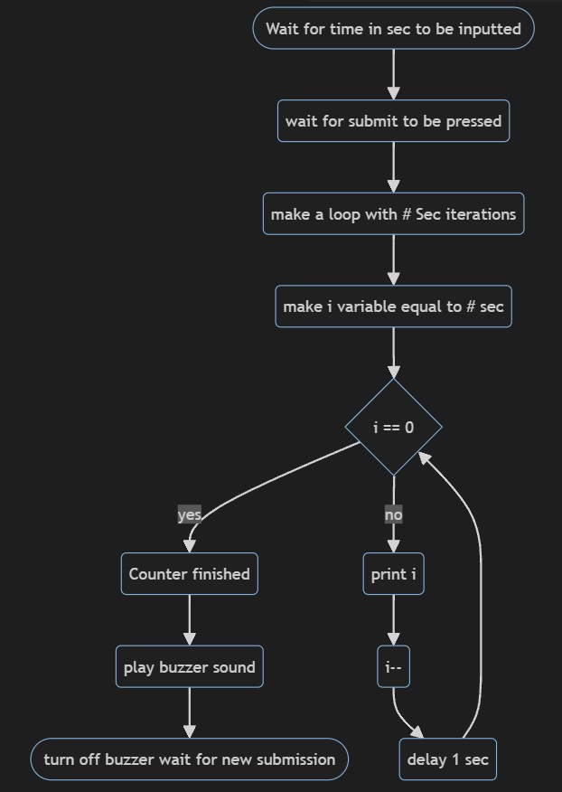

This is the final project for my CSC102 Class Summer 2024
You should have at least 3 items from this list - decision logic (if/else),
loops, string manipulation and validation, functions, classes, and objects
The number of seconds left:
Press Submit to begin counter
